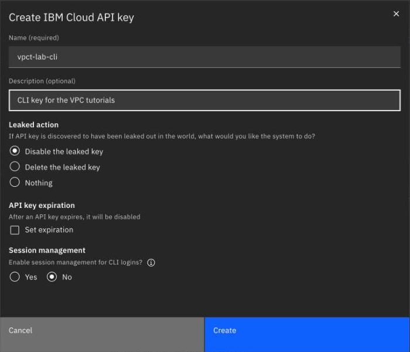
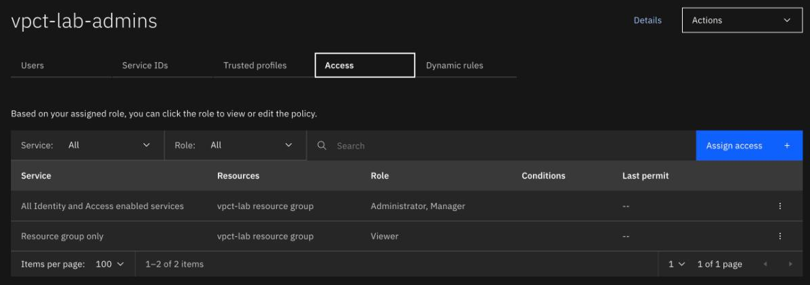

Accounts, resource groups and access
By the end of this unit you'll be able to say how a resource group, an access group and an identity fit together, pick the right identity for a person, a script and a server, and read the real console screens that set them up.
Northgate Freight is a made-up haulier that is moving its vSphere estate to IBM Cloud VPC. The output and screens in this unit are real. In vCenter, Northgate's admins used roles and permissions, and they want to know what replaces them.
Every screenshot and line of output in this unit comes from a real run in a lab account. The vCenter comparison is a rough mapping.
A container, a group, and who is in it
Every resource you create belongs to one resource group. An access group holds identities and gives them IAM policies. Each policy is a role on a target, such as a resource group.
A policy gives a role on a target. A platform role, such as Viewer or Administrator, covers managing a resource. A service role, such as Reader or Manager, covers using the service itself.
From vSphere: roughly, vCenter roles and permissions become IAM access groups and policies. vCenter tags become tags, and user tags and access tags do different jobs.
Watch for this. You choose the resource group when you create a resource, and you can't change it afterwards.
Northgate's network admin will run Terraform on a laptop, and later in automation outside IBM Cloud. Which identity should Terraform run as?
Show the answer
A service ID with its own API key. A service ID is the identity for automation outside IBM Cloud, such as Terraform on your computer. It isn't tied to a user, so it stays when a user leaves the account.
A script runs on a virtual server inside the VPC. Which identity needs no stored key?
Show the answer
A trusted profile for the server. A trusted profile with a compute resource identity has no stored credential, because the server logs in with its own identity. It needs the Instance Metadata service enabled on the server and the server linked to the profile. The session lasts 60 minutes.
Make a key, then read an access group
These are real screens. Click where you'd click. After two misses, the page marks the right place.

Northgate's network admin needs a key for the CLI. Which setting decides what IBM does if the key leaks?
Show where
Right. It's the Leaked action setting, and the default is Disable the leaked key.
Which setting would make the key stop working on a date?
Show where
Right. It's the API key expiration setting. Set expiration is cleared by default, so this key won't expire.
The settings are right. Which button creates the key?
Show where
Right. It's the Create button. The dialog that follows shows the key, and IBM Cloud shows the key only when you create it. Copy it or download it then, and don't share it.

Open the tab that lists what the access group may do.
Show where
Right. It's the Access tab. The other tabs list the users, service IDs and trusted profiles in the group.
Which row lets the group manage every service in vpct-lab?
Show where
Right. It's the row for All Identity and Access enabled services on the vpct-lab resource group, with the roles Administrator and Manager. The Viewer row applies to the resource group only.
Build the same group with the CLI
Run each command in turn. The output is what the CLI returned.
ibmcloud resource group-create vpct-lab
Creating resource group vpct-lab under account <redacted> as <redacted>... OK Resource group vpct-lab was created. Resource Group ID: <resource-group-id>
The command needs only a name.
ibmcloud iam access-group-create vpct-lab-admins -d "Administrators of the vpct-lab resource group"
Creating access group vpct-lab-admins under account <redacted> as <redacted>... OK Name: vpct-lab-admins ID: AccessGroupId-<access-group-uuid> Description: Administrators of the vpct-lab resource group
Which role does a member of the group need on the resource group itself to create resources in it?
Show the answer
Viewer. A member needs at least Viewer on the resource group itself. Run the command to create that policy first.
ibmcloud iam access-group-policy-create vpct-lab-admins \ --roles Viewer \ --resource-type resource-group \ --resource "$(ibmcloud resource group vpct-lab --id)"
Creating policy for access group vpct-lab-admins under account <redacted> as <redacted>...
OK
Policy <viewer-policy-id> for access group vpct-lab-admins was successfully created
Policy ID: <viewer-policy-id>
Version: <version>
Subject: AccessGroupId-<access-group-uuid>
Roles: Viewer
Resources:
Resource Group ID <resource-group-id>
Resource Group Name vpct-lab
Memo Policy applies to the resource group
The Memo line says the policy applies to the resource group itself.
ibmcloud iam access-group-policy-create vpct-lab-admins \ --roles Administrator,Manager \ --resource-group-name vpct-lab
Creating policy for access group vpct-lab-admins under account <redacted> as <redacted>...
OK
Policy <admin-policy-id> for access group vpct-lab-admins was successfully created
Policy ID: <admin-policy-id>
Version: <version>
Subject: AccessGroupId-<access-group-uuid>
Roles: Administrator, Manager
Resources:
Resource Group ID <resource-group-id>
Resource Group Name vpct-lab
Memo Policy applies to the resource(s) within the resource group
No service is named, so this covers all IAM-enabled services in vpct-lab.
It names only vpct-lab, so it gives no access to other resource groups.
This is the first row of the console screen in step 2.
Add a service ID to an access group by its UUID
Northgate's network admin creates a service ID named vpct-lab-tester for its automation and tries to add it to vpct-lab-admins by name. The command fails.
The service ID exists. Why can't the command find it?
Show the answer
The command takes the service ID's UUID. Run the commands to see the message and the fix.
ibmcloud iam access-group-service-id-add vpct-lab-admins vpct-lab-tester
Service ID 'vpct-lab-tester' was not found.
We recorded only this message, as text.
SID=$(ibmcloud iam service-id vpct-lab-tester --uuid) ibmcloud iam access-group-service-id-add vpct-lab-admins "$SID" ibmcloud iam access-group-service-ids vpct-lab-admins
Adding ServiceId-<service-id-uuid> to access group vpct-lab-admins as <redacted> OK ServiceId-<service-id-uuid> added successfully Retrieving all service IDs of access group vpct-lab-admins as <redacted> OK ID IAM ID NAME ServiceId-<service-id-uuid> iam-ServiceId-<service-id-uuid> vpct-lab-tester
Using the UUID works, and the service ID now holds the access group's policies.
Three questions
Review question from Unit 1.2. Northgate's network admin wants one rule that covers every server in a subnet. Which VPC object gives the admin one place to write the rule?
Show the answer
A network ACL rule on the subnet. A network ACL applies to whole subnets, not to individual servers, and a security group is attached to a network interface.
You create a VPC and name no resource group. Where does it go, and can you move it later?
Show the answer
The Default resource group, and you can't change it afterwards. IBM says that if you don't specify a resource group, the resource is created in the Default resource group. You make the choice when you create the resource. Every create command in the lab names the resource group.
The service ID vpct-lab-tester is in vpct-lab-admins. It logs in and lists the resource groups. What does it see?
Show the answer
Only vpct-lab. In the lab the service ID sees the vpct-lab resource group and nothing else, which is the access the group was given.
You can set up access
A resource group is fixed when you create the resource. An access group holds identities and policies. Automation uses a service ID, and a server uses a trusted profile.
Tutorial chapter 10, Install the IBM Cloud CLI and create an API key, chapter 11, Creating a resource group and access group in IBM Cloud, and chapter 12, Authorizing VPC services and a service ID in IBM Cloud IAM, run everything you just saw.